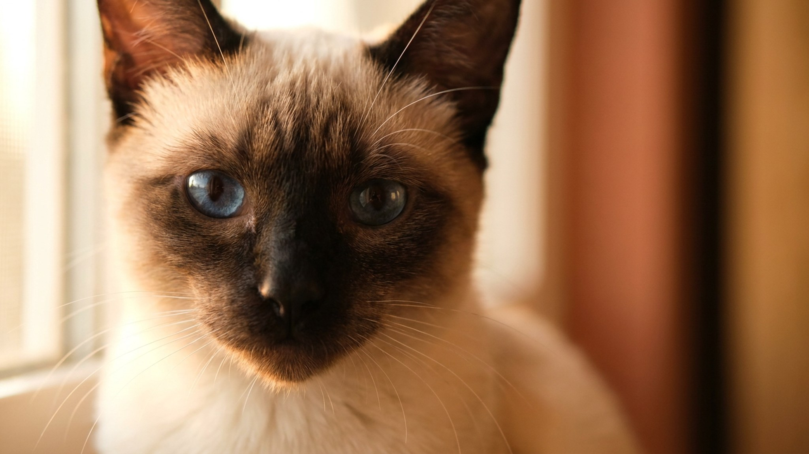

Вы вернулись домой — и сиамская кошка уже у двери, громко докладывает, как прошёл день в ваше отсутствие. Не просто встречает: она выбрала вас один раз и всерьёз. Эта порода строит с человеком связь, которую трудно найти у других кошек, — но за ней идут ревность, голос и нетерпимость к пустой квартире. Разбираем, как это работает и как не вырастить из сиамца невротика.
🐾 Здоровье питомца под контролем
AI-ветеринар, дневник здоровья и персональные советы для вашего питомца — установите AnimaLife бесплатно.
Сиамская кошка — одна из старейших культурных пород, и её поведение сформировалось рядом с человеком, а не в стае. Сиамец не просто любит людей вообще: он выбирает одного конкретного человека и ориентируется именно на него — следит взглядом, ходит следом, засыпает рядом. Это не случайная черта характера, а устойчивая поведенческая стратегия породы.
Именно поэтому смена хозяина или даже долгое отсутствие «своего» человека переносятся сиамцем тяжело. Кошка не просто скучает — она теряет точку опоры.
Сиамская кошка считается одной из самых голосистых пород: низкий, требовательный, иногда почти человеческий голос — её способ общаться. Важно понять разницу: сиамец не «орёт от нечего делать», он ведёт диалог. Несколько ситуаций, которые вызывают вокализацию:
Если сиамская кошка, привычно разговорчивая, вдруг замолчала или, наоборот, начала кричать без очевидной причины — это сигнал обратить внимание и при необходимости показать ветеринару.
Сиамец ревнует — к партнёру, к детям, к другим животным. Это не агрессия, а конкуренция за внимание «своего» человека. Порода плохо переносит одиночество: полный рабочий день в пустой квартире изо дня в день — стресс, который накапливается. Чтобы сиамская кошка оставалась уравновешенной, несколько правил:
Сиамец — не питомец для тех, кто хочет «кошку на фоне». Ему нужен человек, готовый к живому контакту. Если вы работаете из дома или проводите дома много времени — сиамская кошка будет в своей стихии. Если квартира пуста большую часть дня — стоит заранее продумать, чем занять кошку и кто составит ей компанию.
Не пытайтесь «сломать» характер породы: наказание за голос или принудительное одиночество не делают сиамца тише — они делают его тревожнее. Вложите время в игру и предсказуемый распорядок — и получите преданного, общительного питомца, который действительно рад вас видеть.
🐾 Первая помощь — всегда под рукой
AnimaLife подскажет, что делать в тревожной ситуации с питомцем ещё до визита к врачу. Откройте в один тап.
🐾 Понравился разбор?
Подпишитесь на канал — каждый день разбираем по одному тревожному симптому у кошек и собак: что в пределах нормы, а когда пора к врачу. Подпишитесь, чтобы не пропустить разбор, который может спасти здоровье вашего питомца.
Материал носит информационный характер и не заменяет очную консультацию ветеринара.